library(shiny)
runExample("01_hello")Building Web-enabled Visual Analytics Application with Shiny: Shiny basic
Content
What is a Web-enabled Visual Analytics Application?
Why building Web-enabled Visual Analytical Application?
Evolution of web-based Technology
Getting to Know Shiny
What is a Web-enabled Visual Analytics Application?
- Focuses and emphasises on interactivity and effective integration of techniques from data analytics, visualization and human-computer interaction (HCI).
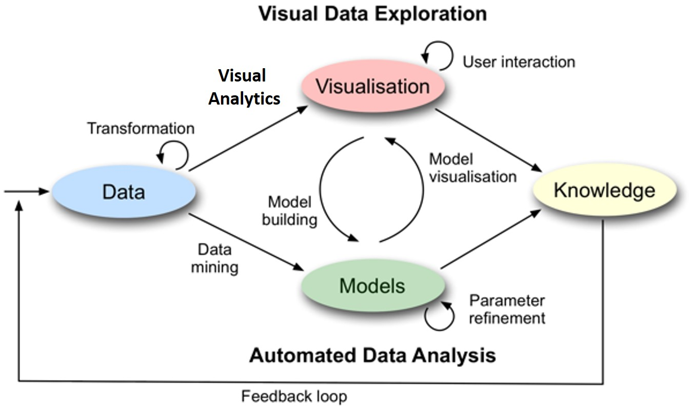
Why building a Web-enabled Visual Analytics Application?
To explore how the best of these different but related domains can be combined such that the sum is greater than the parts.
To democratise data and analytics through web-based analytical applications for data exploration, visualisation analysis and modelling.
Technology Challenges
Mainframe computing tend to have low usability and low accessibility.
Desktop computing tend to have high usability but low accessibility.
Web-based computing (including mobile computing) are highly accesible but with relatively low capability.
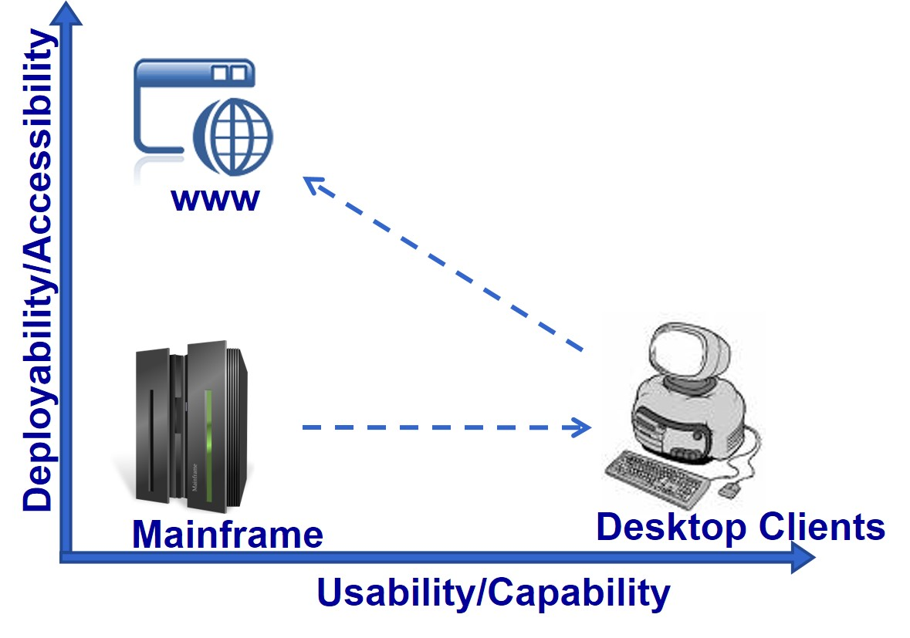
Web-based data visualisation
- The break-through is Rich Internet Applications (RIA)
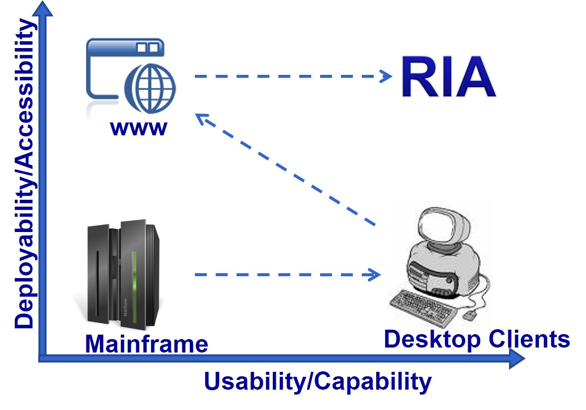
Reference: Rich Internet Applications
Development of RIA
First generation RIA data visualisation (2000~)
- Adobe Flex Builder
- Microsoft Silverlight
- JavaFX
Second generation RIA data visualisation (2010~)
- HTML 5 + JavaScript + SVG + CSS
- Client-side rendering
- No plug-in is required
- Mobile computing enabled
- D3.js - Data Driven Document
Methodological Challenges
Lack of analysis functions.
Not reproducible.
Not extendable.
Require to learn multiple technologies and methods.

Getting to Know Shiny
Shiny: Overview
Shiny is an open package from RStudio.
It provides a web application framework to create interactive web applications (visualization) called “Shiny apps”.
It can be found at https://shiny.rstudio.com/

Getting to Know Shiny
What is so special about Shiny?
It allows R users: - to build and share highly interactive web-enabled applications without having to invest significant among of time and efforts to master core web design technologies such as html5, Javascript and CSS.
- to integrate the analytical and visualisation packages of R without having to change from one programming language to another.
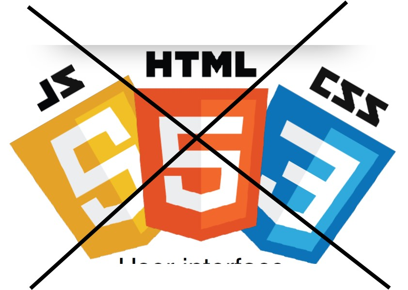
Getting to Know Shiny
Understanding the architecture
- Every Shiny app is maintained by a computer running R.
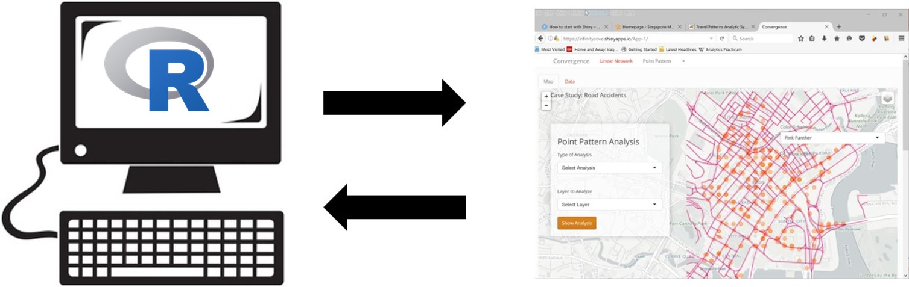
Getting to Know Shiny
The Structure of a Shiny app
- A Shiny app comprises of two components, namely:
- a user-interface script, and
- a server script.
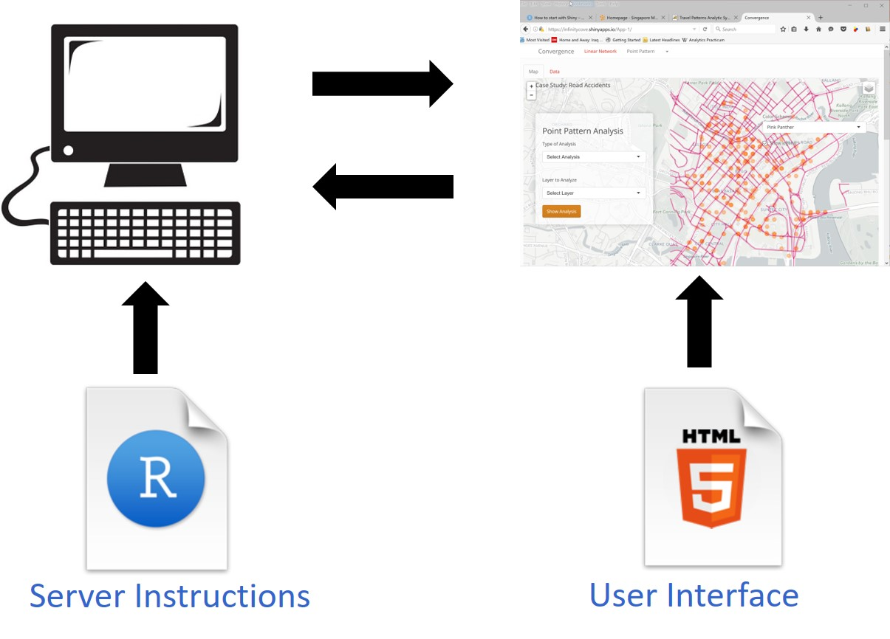
Getting to Know Shiny
Shiny’s user-interface, ui.R
- The ui.R script controls the layout and appearance of a shiny app.
It is defined in a source script name ui.R.
Actually, ui is a web document that the user gets to see, it is based on the famous Twitter bootstrap framework, which makes the look and layout highly customizable and fully responsive.
In fact, you only need to know R and how to use the shiny package to build a pretty web application. Also, a little knowledge of HTML, CSS, and JavaScript may help.
Getting to Know Shiny
Shiny’s server server.R
The server.R script contains the instructions that your computer needs to build your Shiny app.
You are expected to:
- know how to programme with R.
- familiar with Tidyverse, specifically dplyr, tidyr and ggplot2
Getting to Know Shiny
Shiny Examples
The Shiny package has eleven built-in examples that each demonstrates how Shiny works.
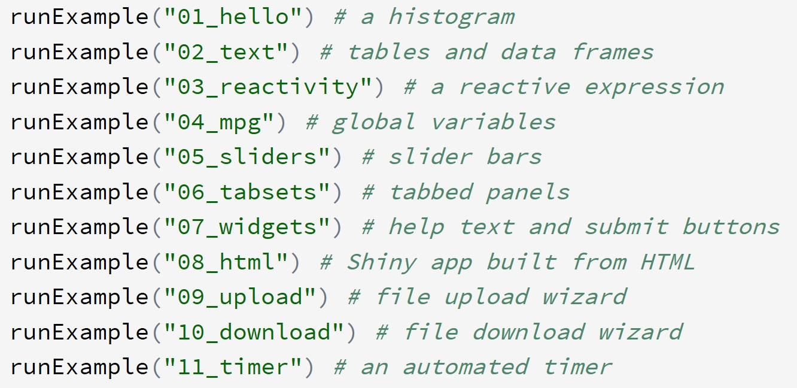
Getting to Know Shiny
Running Shiny example
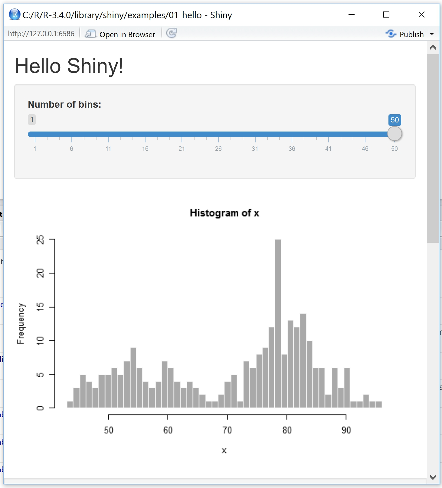
Building a Shiny app
- A Shiny app can be in a form of a single file called app.R.
- Alternatively, a Shiny app can be also created using separate ui.R and server.R files.
- The seperate files way is preferred when the app is complex and involves more codes.
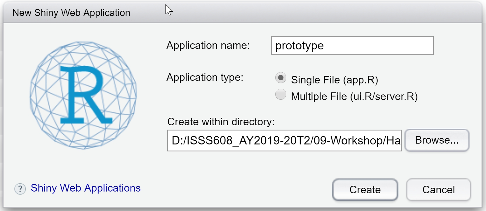
A basic Shiny app script
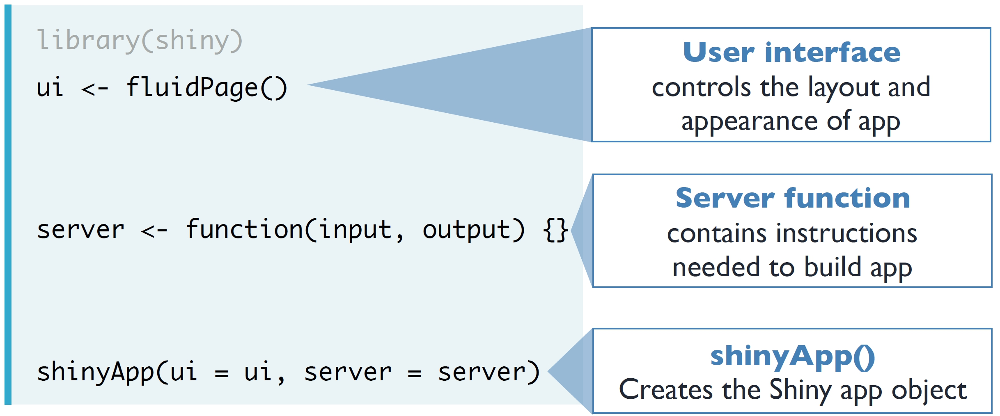
Important tips of Shiny app file
Tip
It is very important that the name of the file is app.R, otherwise it would not be recognized as a Shiny app.
You should not have any R code after the
shinyApp(ui = ui, server = server)line. That line needs to be the last line in your file.It is good practice to place this app in its own folder, and not in a folder that already has other R scripts or files, unless those other files are used by your app.
Loading the dataset
library(shiny)
library(tidyverse)
exam <- read_csv("data/Exam_data.csv")
ui <- fluidPage()
server <- function(input, output) {}
shinyApp (ui=ui, server=server)Make sure that the data file path and file name are correct.
To check if the dataset has been added correctly, you can add a
print()argument after reading the data.
Shiny Layout
Shiny ui.R scripts use the function fluidPage to create a display that automatically adjusts to the dimensions of your user’s browser window.
You lay out your app by placing elements in the fluidPage function.
titlePanel and sidebarLayout are the two most popular elements to add to fluidPage. They create a basic Shiny app with a sidebar.
Shiny Layout Panels
An overview
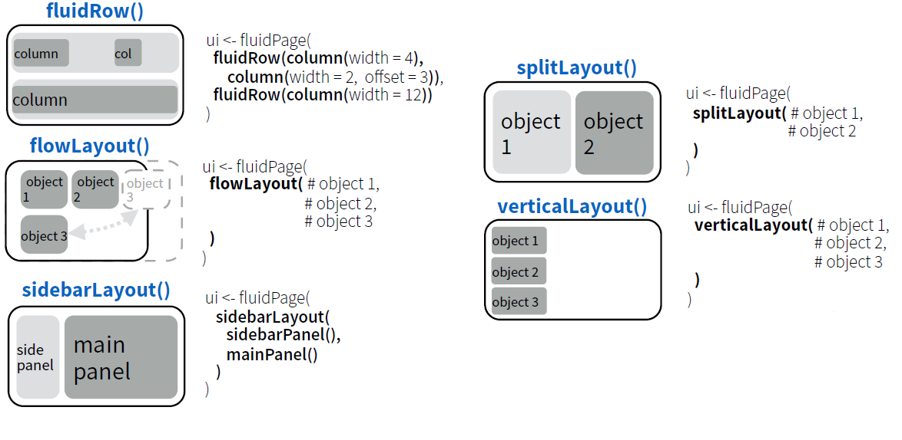
Shiny Layout Panels
Panels
Use panels to group multiple elements into a single element that has its own properties.
Especially important and useful for complex apps with a large number of inputs and outputs such that it might not be clear to the user where to get started.
Shiny Layout Panels
titlePanel()
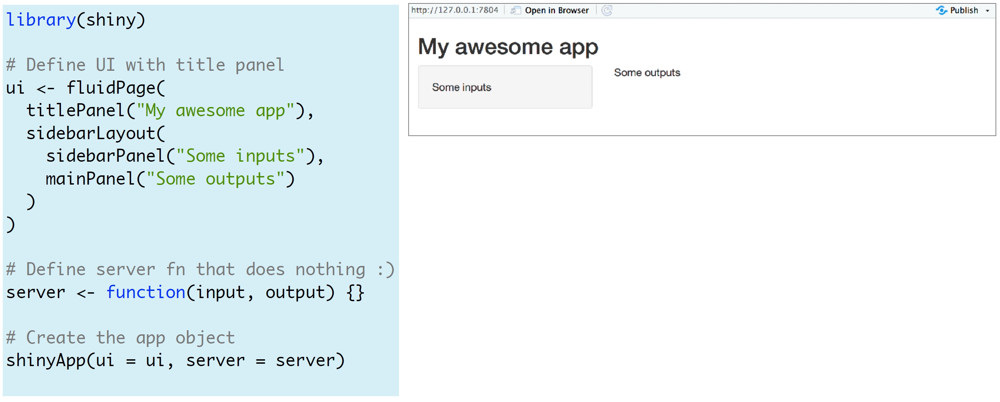
Building the basic UI
Working with titlePanel
titlePanel()is used to add the application title.
library(shiny)
library(tidyverse)
exam <- read_csv("data/Exam_data.csv")
ui <- fluidPage( #<<
titlePanel("Pupils Examination Results Dashboard") #<<
) #<<
server <- function(input, output) {}
shinyApp (ui=ui, server=server)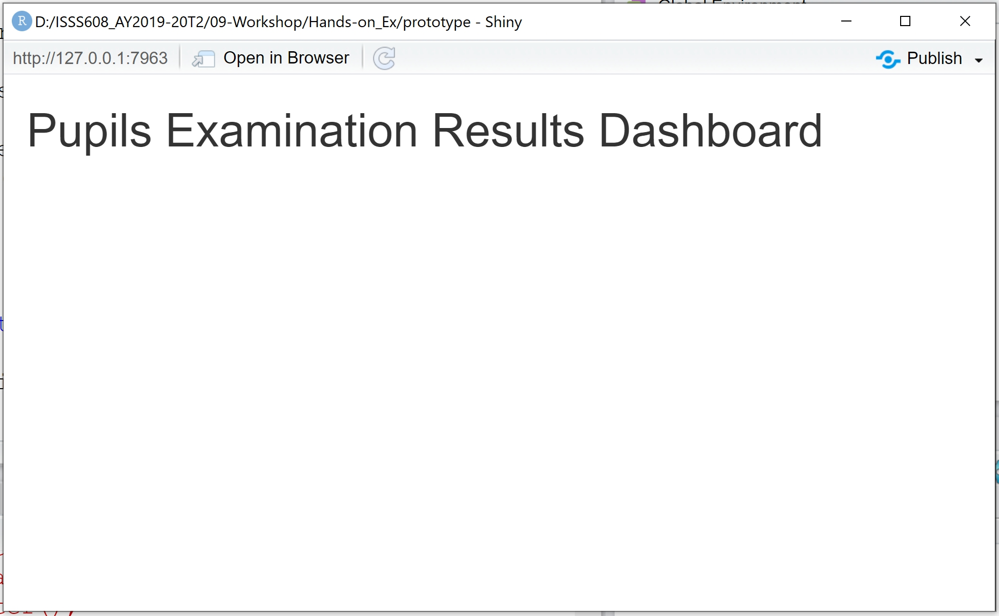
Shiny Layout Panels
Building the basic UI
Building the basic UI
Building the basic UI
Shiny Inputs
An overview of Shiny Inputs
Inputs are what gives users a way to interact with a Shiny app.
Shiny provides many input functions to support many kinds of interactions that the user could have with an app.
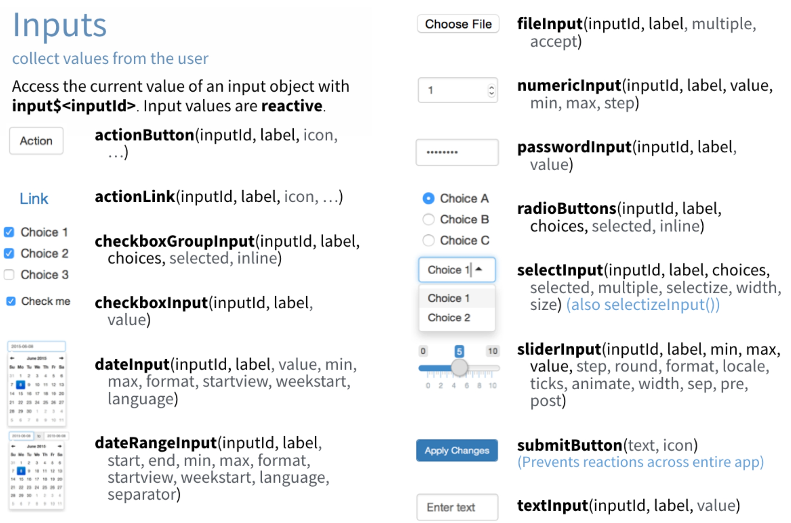]
Reference: Refer to 2 Basic UI of Master Shiny to learn more about Shiny UI usage and arguments.
Shiny Inputs
Inputs syntax
- All input functions have the same first two arguments: inputId and label.
- The inputId will be the name that Shiny will use to refer to this input when you want to retrieve its current value.
- It is important to note that every input must have a unique inputId.
- The label argument specifies the text in the display label that goes along with the input widget.
- Every input can also have multiple other arguments specific to that input type.
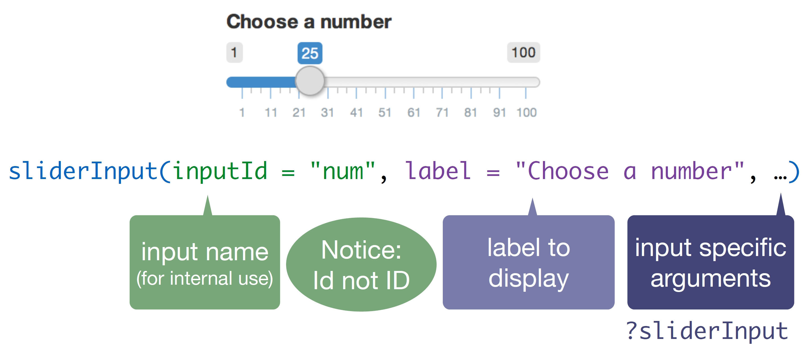
Shiny Inputs
Adding inputs to the UI (selectInput() and sliderInput() functions)
ui <- fluidPage(
titlePanel("Pupils Examination Results Dashboard"),
sidebarLayout(
sidebarPanel( #<<
selectInput(inputId = "variable", #<<
label = "Subject:", #<<
choices = c("English" = "ENGLISH", #<<
"Maths" = "MATHS",#<<
"Science" = "SCIENCE"), #<<
selected = "ENGLISH"), #<<
sliderInput(inputId = "bins", #<<
label = "Number of Bins", #<<
min = 5, #<<
max = 20, #<<
value= 10) #<<
), #<<
mainPanel()
)
)Shiny Inputs
Adding checkboxInput()
Add a checkbox input to specify whether the data plotted should be shown in a data table.
ui: Add an input widget that the user can interact with to check/uncheck the box.
ui: Add an output defining where the data table should appear.
server: Add a reactive expression that creates the data table if the checkbox is checked.
Shiny Inputs
Adding checkboxInput()
- ui: Add an input widget that the user can interact with to check/uncheck the box.]
sliderInput(inputId = "bin",
label = "Number of Bins",
min = 5,
max = 20,
value = c(10)),
checkboxInput(inputId = "show_data", #<<
label = "Show data table", #<<
value = TRUE) #<<
), #<<
mainPanel()
)
)Shiny Output()
An overview of Shiny Output()
- After creating all the inputs, we should add elements to the UI to display the outputs.
- To display output, add it to
fluidPage()with anOutput()function.
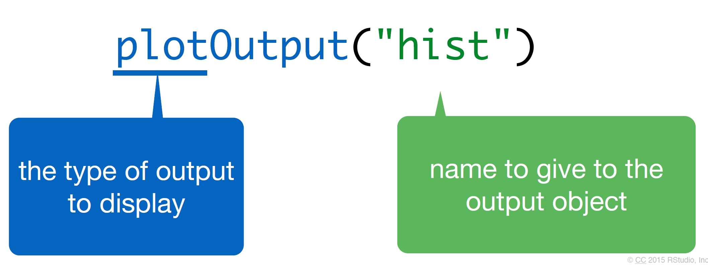
Note
- Similarly to the input functions, all the output functions have a outputId argument that is used to identify each output, and this argument must be unique for each output.
- Each output needs to be constructed in the server code later.
Shiny Output()
Shiny Output() options
- Outputs can be any object that R creates and that we want to display in our app - such as a plot, a table, or text.
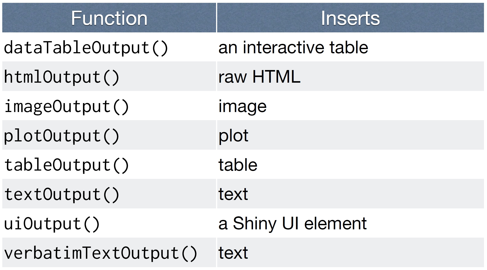
Shiny Output()
Adding plotOutput()
ui <- fluidPage(
titlePanel("Pupils Examination Results Dashboard"),
sidebarLayout(
sidebarPanel("Side bar panel"),
mainPanel(
plotOutput("distPlot") #<<
)
)
)Shiny server.R
Building an output
There are three rules to build an output in Shiny, they are:
Save the output object into the output list (remember the app template - every server function has an output argument).
Build the object with a
render()function, where is the type of output.Access input values using the input list (every server function has an input argument)
Note
The third rule is only required if you want your output to depend on some input.
Shiny server.R
A generic Shiny render() syntax
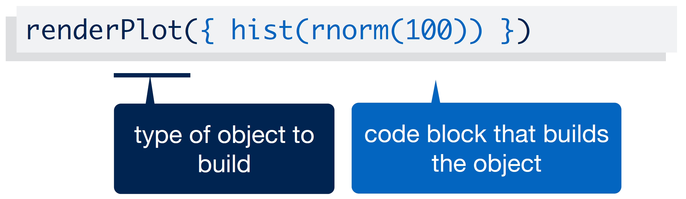
Shiny server.R
Shiny render()
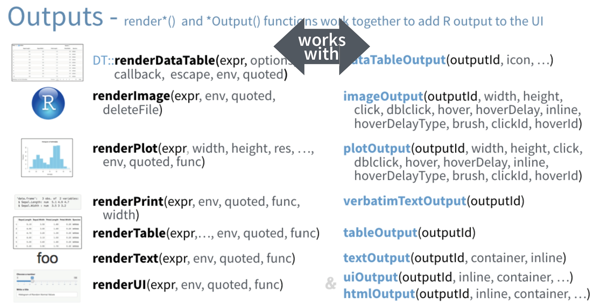
Shiny server.R
Building a basic output
Let’s first see how to build a very basic output using only the first two rules. We’ll create a plot and send it to the distPlot output.
server <- function(input, output){
output$distPlot <- renderPlot({ #<<
ggplot(exam, aes(ENGLISH)) + #<<
geom_histogram(bins = 20, #<<
color="black", #<<
fill="light blue") #<<
}) #<<
}
Note
- This simple code shows the first two rules: we’re creating a plot inside the
renderPlot()function, and assigning it to distPlot in the output list. - Remember that every output created in the UI must have a unique ID, now we see why. In order to attach an R object to an output with ID x, we assign the R object to output$distPlot.
- Since distPlot was defined as a plotOutput, we must use the
renderPlot()function, and we must create a plot inside therenderPlot()function.
Shiny server.R
Building a complete output
server <- function(input, output){
output$distPlot <- renderPlot({
x <- unlist(exam[,input$variable]) #<<
ggplot(exam, aes(x)) +
geom_histogram(bins = input$bin,
color="black",
fill="light blue")
})
}Shiny server.R
Building a complete output: The revised version
server <- function(input, output){
output$distPlot <- renderPlot({
ggplot(exam,
aes_string(x = input$variable)) + #<<
geom_histogram(bins = input$bin,
color="black",
fill="light blue")
})
}
Note
- Notice that
aes_string()instead ofaes()of ggplot2 is used. To understand the differences betweenaes_string()andaes(), please refer to this link.
The shinyApp()
Important
- It is important to add shinyApp() at the end of your Shiny application.
shinyApp(ui = ui, server = server) #<<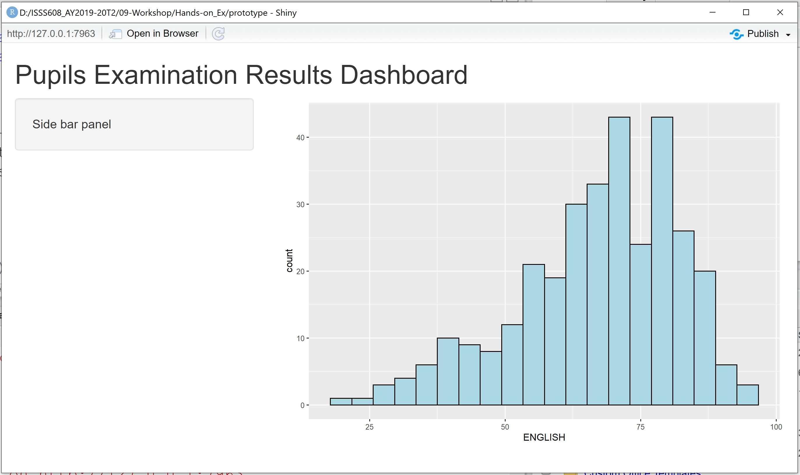]
Shiny app is Reactive
- Reactivity automatically occurs when an input value is used to render an output object.
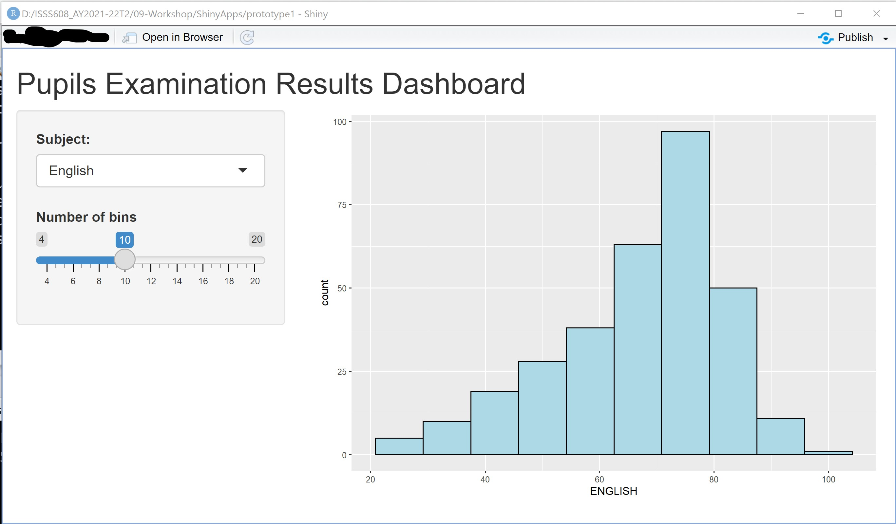
Reactive Flow

Survival Tips
Tip
Always run the entire script, not just up to the point where you’re developing code.
Sometimes the best way to see what’s wrong is to run the app and review the error.
Watch out for commas!
References
Hadley Wickham (2021) Mastering Shiny, O’Reilly Media. This is a highly recommended book.
Building Web Applications with Shiny, especially Module 1 and 2.
Beyond Uncle Google! Last but not least, when you need help